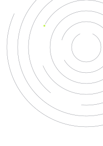
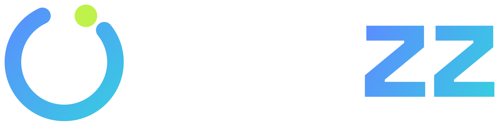

EjemploCaso de estudio · Fitness · Bilbao
Cómo un gimnasio boutique con buena reputación convirtió el interés en altas con anuncios a WhatsApp y un asistente que contesta al momento.
Pruebas / mes
14 → 41
en 90 días
Coste por alta
38€
frente a 95 € al inicio
Altas nuevas
+23/mes
56 % de las pruebas se dan de alta
Cliente
Forja Training Club
Entrenamiento funcional en grupos de 8
Servicios
Meta Ads · Google Ads · Asistente de WhatsApp · SEO local
Duración
Junio–agosto 2026
Forja tenía 4,8 ★ en Google y socios fieles, pero las altas nuevas dependían del boca a boca. Invertía unos 380 € al mes en publicaciones promocionadas que traían «me gusta» y casi ningún mensaje. Los que sí escribían esperaban una media de 11 horas a que alguien respondiera entre clase y clase.
Resultados
| Métrica | Mayo (antes) | Agosto | Cambio |
|---|---|---|---|
| Tiempo medio de primera respuesta | 11 h | 4 min | −99 % |
| Solicitudes de clase de prueba | 22 | 68 | ×3,1 |
| Clases de prueba realizadas | 14 | 41 | ×2,9 |
| Altas nuevas | 4 | 23 | +19 |
| Inversión en anuncios | 380 € | 874 € | +494 € |
| Coste por alta (solo anuncios) | 95 € | 38 € | −60 % |
Datos de ejemplo con fines ilustrativos. En un caso real, cada cifra se acompaña de su fuente (CRM, Meta Ads Manager, Google Ads) y del periodo exacto.
Los anuncios con descuento en la cuota trajeron solicitudes baratas pero pocas altas. Los pausamos en la semana 3.
¿Tu negocio se parece a este?
30 minutos. Sales con un diagnóstico, no con un presupuesto.
cal.com/oryzz/30min